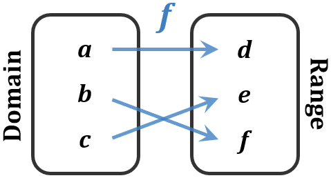

A Quick Intro to Functions
The basic idea of a function is something that connects the elements from one group, or set, to another. The sets that it connects are called the domain and the range. We think of the domain as the set of input items which are then each connected with one output item in the range.
Now, in order to understand functions well, we first need to understand sets, so that will be our first order of business in this chapter. After that, we can move on to a basic definition of functions, similar to the one we just described. Once we have that definition down, then we'll move on to discussing some of the characteristics of functions and some of the ways that we can analyze and change functions.